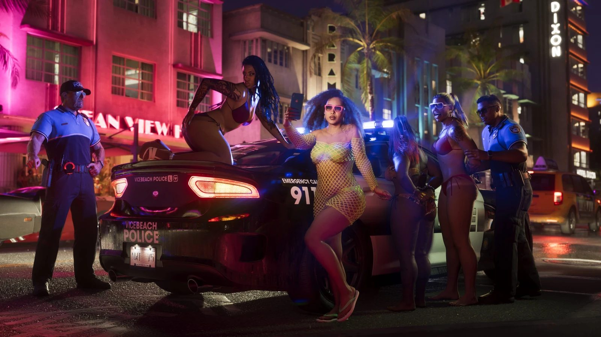

Best GTA 6 settings: the honest launch guide

Short answer: when GTA 6 first boots, it asks you to set exactly 4 things, Navigation Experience, UI Text Size, Subtitles and Brightness. And one warning first: there is NO 60fps Performance mode in GTA 6. The game runs at 30fps on every console, any guide telling you to "switch to Performance mode" is guessing. This page covers the real setup screens and the settings that actually help (checked 19 November 2026).
The 4 first-boot setup screens
- 1. Navigation Experience, choose how directions appear. Options include Minimap (Dynamic) and Minimap & Compass (Dynamic). Pick Minimap & Compass if you like a compass bar; both can be changed later.
- 2. UI Text Size, if you play on a TV across the room, go one size up from the default; small UI text is the first thing players complain about.
- 3. Subtitles, turn them on (Small or Medium is the sweet spot). GTA 6's story is dialogue-heavy and easy to miss in noisy scenes.
- 4. Brightness, follow the on-screen instruction: adjust until the Rockstar logo is only just visible. Too bright washes out Vice City's neon; too dark hides interiors.
- Then confirm "Finish Setup?", every one of these can be changed later in Settings, so don't overthink the first pass.
The performance truth (read this before other guides)
- Confirmed: GTA 6 targets 30fps on PS5 and Xbox Series X|S, Rockstar confirmed the 30fps target in its 10 November preload announcement. There is no Fidelity/Performance toggle in the game at launch.
- Measured: Digital Foundry's analysis found the game renders around 1440p internally and upscales to 4K, with near-perfect frame pacing on PS5 Pro; dips to around 24fps were seen only in extreme multi-car chaos.
- Fake advice going around: "turn off motion blur and film grain, switch to Performance for 60fps", those toggles and that mode do not exist in GTA 6 at launch. Don't waste time hunting menus for them.
Settings that actually make a difference
- TV Game Mode: ON. The single biggest improvement for most players, it cuts input lag noticeably.
- TV motion smoothing / interpolation: OFF. Features with names like TruMotion or MotionFlow add delay and make 30fps look strange.
- Console HDR calibration: run your PS5 / Xbox HDR calibration once, properly, in a dark-ish room, Vice City's neon is built for HDR.
- PS5: HDR set to "On When Supported"; Resolution and VRR (if your TV supports it) on Automatic.
- Xbox: allow HDR10 and Auto HDR per your TV's capability; keep the console's own display calibration done.
- New controls note: sprint is now L3, see our full GTA 6 controls guide.
FAQ
Does GTA 6 have a 60fps performance mode?
No. GTA 6 runs at 30fps on all consoles at launch; Rockstar confirmed the 30fps target on 10 November 2026, and there is no performance-mode toggle in the settings.
What are the first settings GTA 6 asks for?
Four screens, in order: Navigation Experience, UI Text Size, Subtitles, then Brightness, then a "Finish Setup?" confirmation. All four can be changed later.
What is the best brightness setting for GTA 6?
Follow the game's own instruction: adjust until the Rockstar logo is only just visible.
Sources checked 19 November 2026: launch-day setup guides documenting the four first-boot screens (updatecrazy; The Daily Checkpoint), Rockstar's 10 November 2026 preload Newswire (30fps target), Digital Foundry performance analysis. Labels: Confirmed = officially stated or multiply verified; Reported = claimed by sources, not yet officially confirmed.